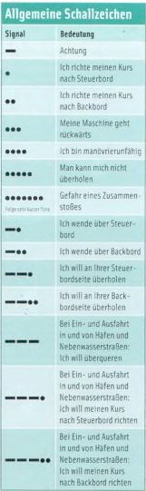
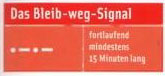
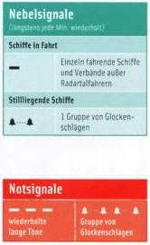

ЗВУКОВЫЕ СИГНАЛЫ
Для обеспечения возможности однозначной передачи намерений между судами используются звуковые сигналы. Они
представляют собой различные комбинации коротких (*) и длинных (-) тонов.
Коммерческие суда на внутренних водных путях также обязаны подавать желтый световой сигнал той же длительности
наряду со звуковым сигналом.
Прогулочные суда длиной менее 20 метров не обязаны подавать звуковые сигналы. Если они это делают, им запрещено
использовать любые другие сигналы или подавать их по какой-либо другой причине. Световые сигналы для них не
требуются.
- (*) - продолжительность около 1 секунды,
- (-) - приблизительно 4-6 секунд,
Пауза между двумя последовательными тонами составляет приблизительно 1 секунду.

- (-) - Внимание!
- (*) - Я корректирую курс вправо.
- (**) - Я корректирую курс, чтобы вернуться в порт.
- (***) - Моя машина работает в обратном направлении
- (****) - Я не могу маневрировать
- (*****) - меня нельзя обгонять
- (*******) - (серия очень коротких сигналов) Риск столкновения
- (-*) - Я поворачиваю на правый борт.
- (-**) - Я поворачиваю в порт.
- (--*) - Я хочу обогнать вас с правого борта.
- (--**) - Я хочу обогнать её с левой стороны.
- (---) - При входе и выходе из портов и второстепенных водных путей: я хочу пересечь границу.
- (---*) - При входе и выходе из портов и второстепенных водных путей: я хочу скорректировать свой курс на правый
борт
- (---*) - При входе и выходе из портов и второстепенных водных путей: я хочу скорректировать свой курс на левый
борт
Сигнал держаться подальше - Bleib-weg-Signal
Предназначен для использования в опасных ситуациях, когда суда, перевозящие легковоспламеняющиеся, взрывоопасные,
токсичные или радиоактивные грузы, сталкиваются с ними.
Он представляет собой последовательность короткого и длинного звукового сигнала, подаваемых в течение как минимум 15
минут.
Любой, кто услышит этот сигнал, должен как можно быстрее и дальше отойти.

Сигналы в тумане
Эти правила также распространяются только на коммерческое судоходство (более 20 м), но все же полезно их знать.
Малые суда без радара и радиосвязи должны покидать фарватер кратчайшим путем в условиях тумана или плохой видимости.
Даже коммерческие суда должны бросить якорь или пришвартоваться у берега, если видимость настолько плоха, что движение
не может продолжаться в безопасности.
Одиночное плавающее средство, движущееся без радара, в тумане издает длинный звуковой сигнал, повторяющийся не чаще
одной минуты.

Назад Оглавление Вперед